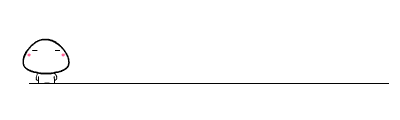
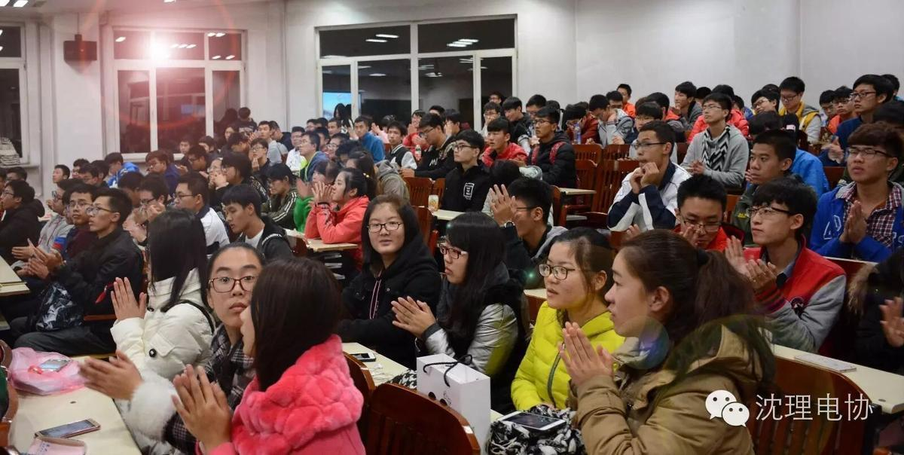
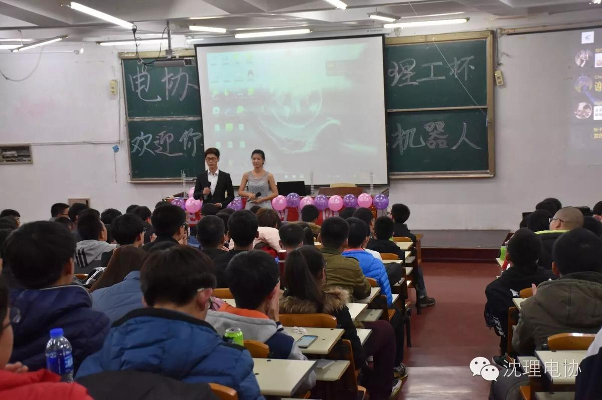
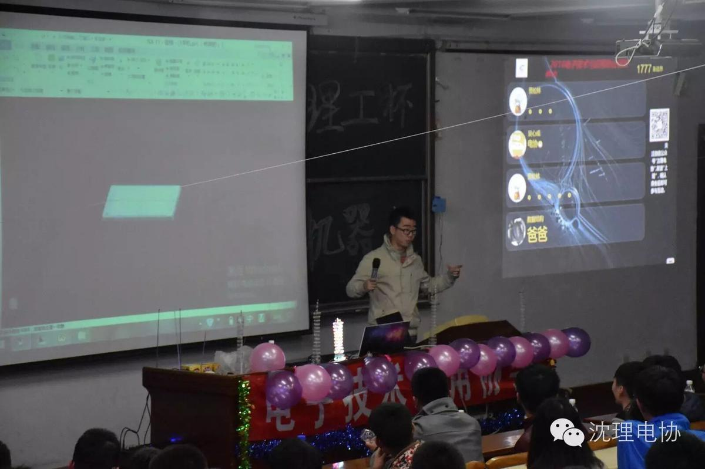
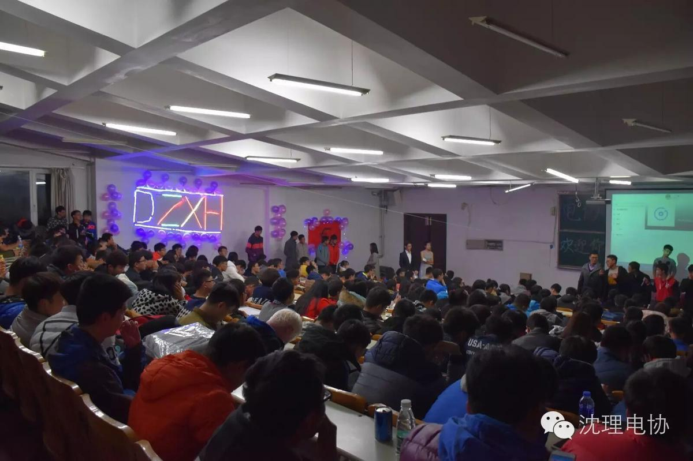
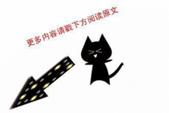

我们的电协

点击阅读原文，一起玩耍
我想我们大一新生起初对于电协的认识来自于新生讲座上学长学姐的述说；那时的电协对于我们信息院的新生就是一个无比向往的地方，因为在那里我们可以学习很多对我们专业有帮助的知识同时也可以锻炼自己的动手能力，除此之外我们还可以参加各种比赛如果成绩优秀的话对我们的学分以及经验都会有帮助。 当然电协真的是一个很炫的地方，那里有各种好玩又高大的知识，我们可以学习远程控制，集成电路，以及酷炫的LED；如果认真好学我们完全可以从一个小白蜕变成大神。
我想我们大一新生起初对于电协的认识来自于新生讲座上学长学姐的述说；那时的电协对于我们信息院的新生就是一个无比向往的地方，因为在那里我们可以学习很多对我们专业有帮助的知识同时也可以锻炼自己的动手能力，除此之外我们还可以参加各种比赛如果成绩优秀的话对我们的学分以及经验都会有帮


这是我们一年一度的电协迎新晚会，那晚有很多精彩的表演。有令人捧腹大笑的小品，有动听的歌声，还有具有特色的现场上墙活动。现场布置也展现了我们电协的特点。



接下来看看我们刚结束的社团学习活动，每个星期六晚上我们都会相约信息楼学习新的知识，大家在学长的教导下慢慢学会了很多东西，学长也很耐心解答我们的疑问。

总之来到电协我很开心，也会珍惜每一次锻炼自己的机会，希望大家一起在电协共同进步，一起将电协办的越来越好，致我们的电协。
编辑 信息部 丁宇亭
